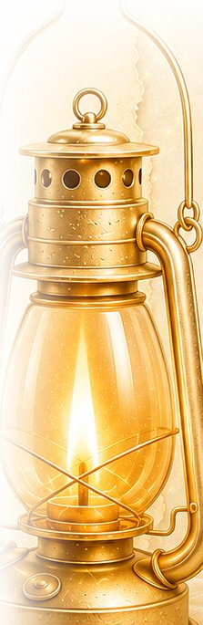

Despertadas
Reconhecer o próprio sono. O começo não é esforço — é despertar.
Versao FOGO · ver a versao OURO
Com Cecília Couto
Tem mulher que está de pé na igreja e dormindo por dentro.
Um chamado para acender o altar e se preparar para a volta do Noivo.
Sete módulos em aulas gravadas e um encontro ao vivo com a Cecília toda semana.
A partir de R$ 49 por mês · certificado de conclusão
O que ninguém percebe
Você chega no horário. Serve no ministério. Abre a Bíblia porque é o certo, lê três capítulos e fecha sem ter ouvido nada.
Por fora está tudo em ordem. Por dentro, faz meses que você ora pedindo perdão pela mesma coisa: por não sentir mais.
E aí vem a culpa — que é justamente o que te mantém de pé e exausta ao mesmo tempo. Você acha que se afastou. Você acha que é falta de fé.
Não é. Secura não é frieza. Secura é o que acontece com quem deu, deu, deu, e não teve para onde voltar.
“Desperte, você que está dormindo, levante-se dentre os mortos, e Cristo te iluminará.”
Efésios 5.14Repare que não é convite. É ordem. E ordem só se dá a quem tem condição de obedecer.
A escola
A Mentoria Despertai é um chamado profético ao posicionamento da Noiva de Cristo: acender o altar e estar pronta para a volta do Noivo. Mulheres alinhadas e posicionadas para despertar outras mulheres.
A escola tem duas partes que andam juntas. Os sete módulos, com várias aulas gravadas cada um, que você assiste no seu ritmo e revê quantas vezes precisar. E o encontro ao vivo com a Cecília, toda semana, onde o que foi estudado vira conversa, oração e direção.
Não tem turma para esperar. Você entra, recebe a biblioteca inteira e já participa do próximo encontro. São doze meses de acesso para percorrer tudo.
Os sete módulos, em ordem
Cada módulo reúne várias aulas gravadas e é consequência do anterior. Não dá para se posicionar antes de despertar, nem para colher antes de interceder.
Reconhecer o próprio sono. O começo não é esforço — é despertar.
Sair do automático e descobrir para que Deus te chamou nesta geração.
Ocupar o lugar que já é seu como Noiva de Cristo, sem pedir licença.
O que sustenta a casa quando a emoção passa: fundamento, discernimento e maturidade.
Orar com a autoridade de quem aprendeu a reconhecer a voz do Pai.
O que vem depois da obediência — e como não desperdiçar a colheita.
Levar o avivamento para dentro de casa. O despertar não termina em você.
Quem conduz
Casada com Gilberto há 20 anos, com quem vive o propósito de Deus. Doutora com formação em Nutrição, entregou-se por completo ao chamado do Senhor.
Mentora do Despertai de Mulheres e voz profética do avivamento desta geração. Carrega a mensagem profética do despertar de mulheres e de famílias sacerdotais, firmadas em Cristo. Com ousadia do Espírito Santo, proclama as virtudes de Cristo e convoca uma geração a viver em intimidade profunda com Deus, maturidade espiritual e obediência à Sua vontade.
Autora de
◆ Um Lar Edificado sobre a Rocha
◆ Família Sacerdotal Enraizada em Cristo — que dá nome ao sétimo encontro da escola.
Investimento
R$ 49
por mês, na recorrência. Cartão ou Pix recorrente. Você cancela quando quiser.
R$ 497
à vista ou em até 12× no cartão. Um ano inteiro de acesso.
Economiza R$ 91Pagamento pela Kiwify · acesso liberado assim que o pagamento é aprovado
Você entra, participa, percorre o material. Se em até 7 dias entender que não é para você, escreve para e-mail de contato e o valor volta integral — sem justificativa e sem constrangimento. É o que a lei garante (art. 49 do Código de Defesa do Consumidor) e é como trabalhamos.
Antes de decidir
Da mesma autora
Você não precisa deles para acompanhar a mentoria — mas são a mesma mensagem, por escrito, para ler com calma e voltar depois.
Uma linha sobre o que este livro trata.
Quero este livroO livro que dá nome ao sétimo encontro da mentoria. Completar com uma linha da Cecília.
Quero este livro
Se você se reconheceu, não foi coincidência.
Quero entrar na mentoria7 dias de garantia · um ano de acesso